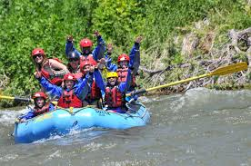

Welcome to Troop 104 chartered by the Raleigh Elks Lodge in Raleigh North Carolina! We are an active Troop that believes community service, outdoor adventures, and leadership opportuities provide Scouts tools they need to grow into successful young adults.
• Founded in 1969• Meet Mondays @ 7 pm at the Raleigh Elks Lodge (at the intersection of Lead Mine and Millbrook Roads)
• Camping trips once a month
• Summer camp every year
• 83 Eagle Scouts in past 23 years
• Scouts have attended National and World Jamborees, Philmont, Northern Tier and Sea Base
• Dedicated parental support through Troop Committee and Assistant Scoutmasters
Troop 104 is the perfect size to ensure that scouts can experience high quality outdoor adventures, explore their leadership potential and receive quality instruction from senior Scouts and trained Scouters. Our program emphasizes inclusion of all scouts from the moment they bridge or join the troop. Younger scouts are placed into existing patrols where they can learn from senior Scouts using the patrol method. Outdoor programs are structured so that activities, adventures and advancement opportunities exist for Scouts at all levels.
